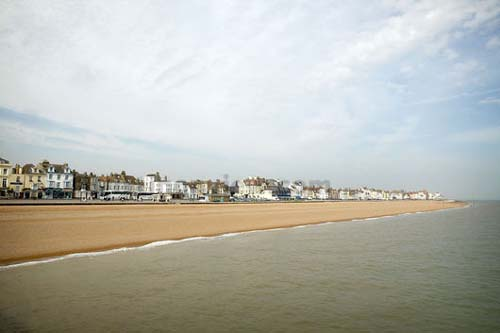

Sunday, June the 3rd, 2012
back to: title, date or indexes
What, when there are places on the map called Upper Dicker, Lower Dicker, or Wyre Piddle, was the particular appeal of Deal (pop. 28,504), one wonders, for the nation's reprobates and misanthropes? The drunken polymorphously perverse bankrupt novelist and cashiered King's Own Shropshire Light Infantryman Simon Raven (1927–2001), for example, was banished to a nursing home for handicapped old ladies in the town for thirty-four years, sallying forth every now and again to a massage parlour opposite the Reform Club, Pall Mall, for ‘a good housemaid's wank’. One is compelled to picture the streets of Deal as a world in decay thronged with George Grosz characters got up in askew velvet hats and musquash coats seeking eyeglass-fogging diversions. ‘I always used to see [Charles] Hawtrey being pulled out of pubs,’ Raven recalled the week before he died, ‘But what's wrong with that? We all like a drink, don't we dear?’ Deal is the capital of non-conformity.
A footnote by Roger Lewis in his biography Charles Hawtrey : The Man Who Was Private Widdle (2001). Another Deal resident, in his final years, was Rayner Heppenstall (1911–1981), whose posthumously published novel The Pier is a murderous fantasy in which the Heppenstall-like narrator systematically plans and commits the slaughter of his (working class) next door neighbours.
